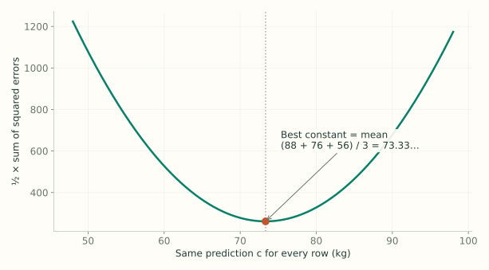
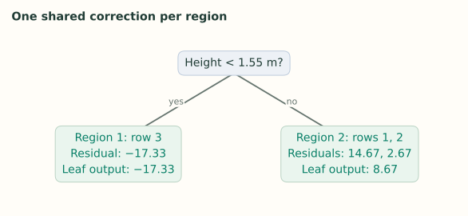

2. Regression: The Derivation
Notes on StatQuest with Josh Starmer · Gradient Boost Part 2 · 26:46 video. Explanations and redrawn figures follow the lecture’s worked example.
Lecture 1 showed what boosting does. This lecture derives the same steps from squared-error loss: start at a mean, calculate residuals, fit a tree, average within its leaves, and update predictions.
1. Three rows and one loss
Video 0:56 ↗| Row | Height (m) | Color | Gender | Weight $y_i$ |
|---|---|---|---|---|
| 1 | 1.6 | Blue | Male | 88 |
| 2 | 1.6 | Green | Female | 76 |
| 3 | 1.5 | Blue | Female | 56 |
$x_i$ means the input features of row $i$; $y_i$ is its measured weight. $F(x_i)$ is the current prediction. The loss of one row is
The factor $1/2$ makes derivatives simpler. It halves every squared-error total, so it does not change which prediction has the smallest loss.
2. Why the first prediction is the mean
Video 6:30 ↗Before building a tree, choose one constant $c$ for every row. The notation $\arg\min_c$ means “find the value of $c$ that makes this total smallest.”
Differentiate with respect to $c$, and set the result to zero:

3. Why the negative gradient becomes a residual
Video 10:01 ↗At round $m$, $F_{m-1}$ is the model containing all trees built so far. Differentiate the loss with respect to its prediction, not an input feature:
A positive derivative means increasing the prediction increases loss. Reverse its sign to get the direction we want the next tree to learn:
For this loss, the pseudo-residual is exactly the ordinary residual. “Pseudo-residual” is the general name because other losses produce different negative gradients.
| Row | Actual weight | Current prediction | First residual |
|---|---|---|---|
| 1 | 88 | 73.33… | +14.666… |
| 2 | 76 | 73.33… | +2.666… |
| 3 | 56 | 73.33… | −17.33… |
4. Fit the tree and name its regions
Video 12:47 ↗Train a regression tree with the original features as inputs and these residuals as targets. The lecture’s stump uses height < 1.55 m. Row 3 goes left; rows 1 and 2 go right.

$R_{jm}$ means leaf region $j$ in tree $m$. $\gamma_{jm}$ is the single correction that leaf will output. For the first tree there are two regions: $R_{1,1}$ and $R_{2,1}$.
5. Why each leaf outputs the average residual
Video 14:50 ↗Keep the previous predictions fixed. For one region $R$, choose a shared addition $\gamma$ that minimizes the loss of its rows:
The expression $y_i-F_{m-1}(x_i)$ is the residual $r_i$. So we are fitting one constant to the residuals inside this leaf:
The left leaf has just one residual, so it outputs $-17.33\ldots$. The right leaf outputs $(14.666\ldots+2.666\ldots)/2=8.666\ldots$. Averaging is therefore the squared-loss solution, not an extra arbitrary rule.
6. Update predictions and repeat
Video 20:38 ↗With learning rate $\nu=0.1$, add one tenth of the leaf output to each row’s previous prediction:
| Rows | Previous prediction | Leaf correction | Updated prediction |
|---|---|---|---|
| 1 and 2 | 73.33… | +8.666… | 74.2 |
| 3 | 73.33… | −17.33… | 71.6 |
The next residuals are $88-74.2=13.8$, $76-74.2=1.8$, and $56-71.6=-15.6$. Fit the next tree to these new targets.
$J_m$ is the number of leaves. The indicator is 1 only for the leaf reached by $x$, so exactly one leaf contributes per tree. The sum is a way to write the tree’s prediction; a row does not enter multiple leaves.
7. Use the fitted sum for new data
Video 24:59 ↗After $M$ rounds, keep $F_M$. For a new input, follow the feature rules in every tree and add its scaled leaf value to the initial mean. Training used residuals to learn these rules; prediction only needs the features.
The lecture’s description corrects the leaf indexing and explains the one-leaf indicator. Those corrections are incorporated here.